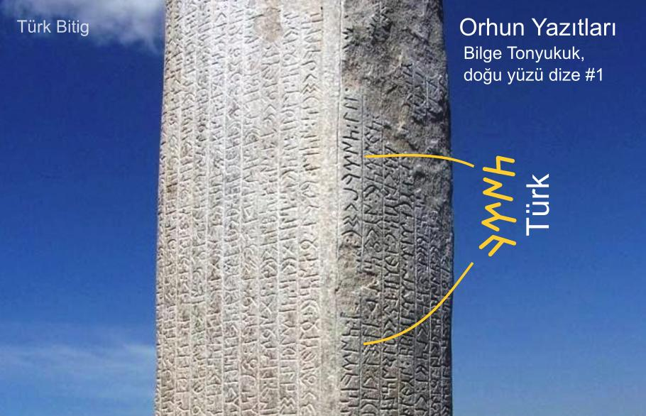

Göktürkçe Türk
Göktürk Alfabesi veya Göktürkçe Türk kelimesi Türklerin kendi yazdıkları kitabeler olan Orhun Yazıtları'nda aşağıdaki iki şekilde yazılmıştır.
Türk 𐱅𐰇𐰼𐰜
Türk 𐱅𐰇𐰼𐰚
Kültiğin Abidesindeki yazı, Türk orduları komutanı Kültiğin öldüğünde, onun anısına ağabeyi Hükümdar Bilge Kağan tarafından bizzat yazdırılmıştır. Tonyukuk Abidelerindeki yazı ise başvezir Bilge Tonyukuk tarafından yazdırılmıştır. Bu Kelime Orhun Abidelerinde "Türk" veya "Türkbodun" (Türkboyun/boyları) şeklinde onlarca defa yazılmıştır.

Orhun Yazıtları, Kültiğin anıtında Göktürkçe Türk ve Tanrı kelimeleri görülmektedir.

Orhun Yazıtları, Bilge Tonyukuk anıtlarında "Türk Boyları" kelimeleri görülmektedir.